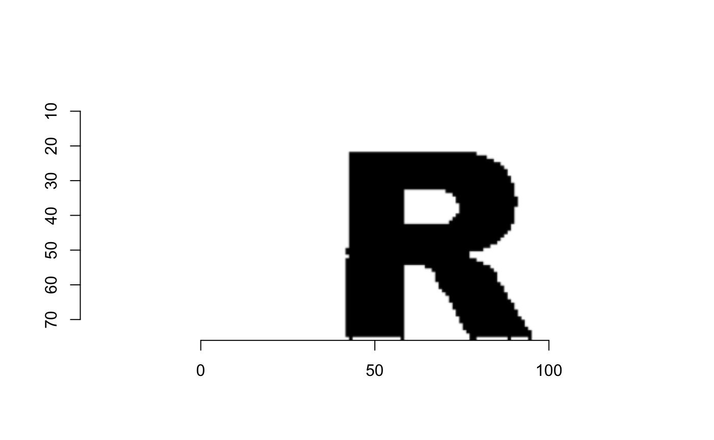
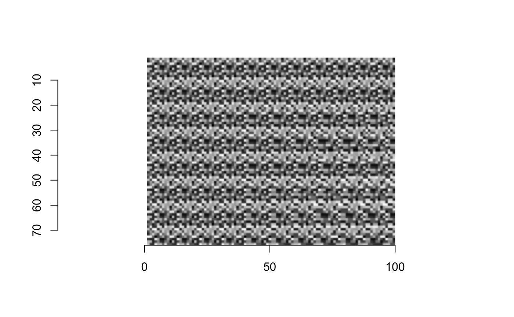
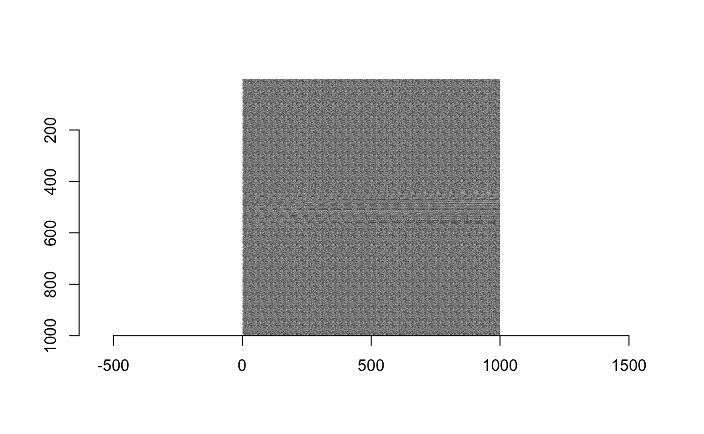

MagicEye.Rmdlibrary(magiceyer)
You could use this package to generate autostereograms.
You need an image as the shape hidden in the magic eye
Convert the image into the depthmap
You need to define shift. 0.1-0.2 should be fine.
Generate the autostereograms
image <- getdepthmap("https://cran.r-project.org/Rlogo.jpg") plot(image)


You could also generate text as hidden information in the autostereograms
